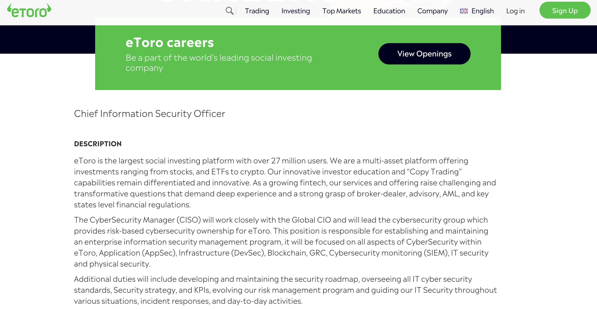
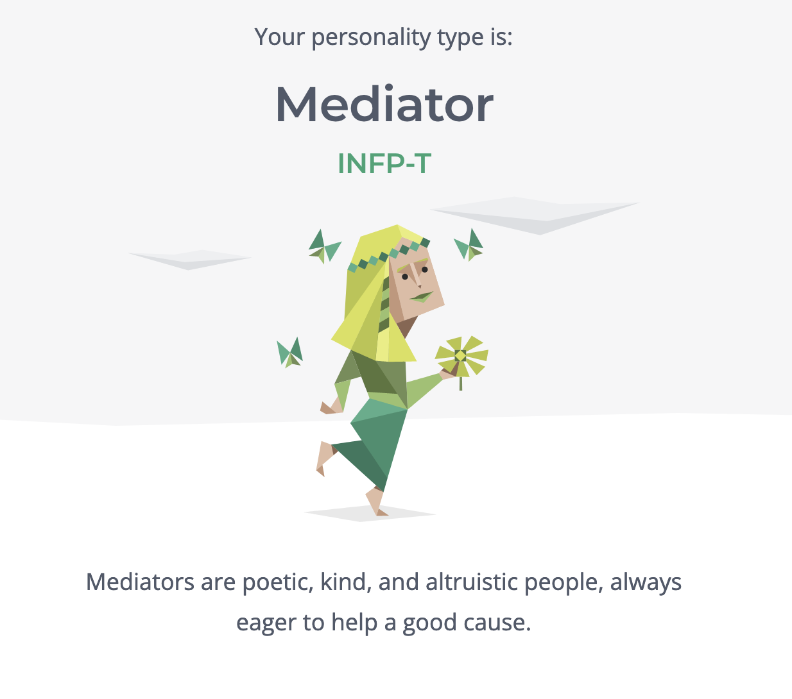
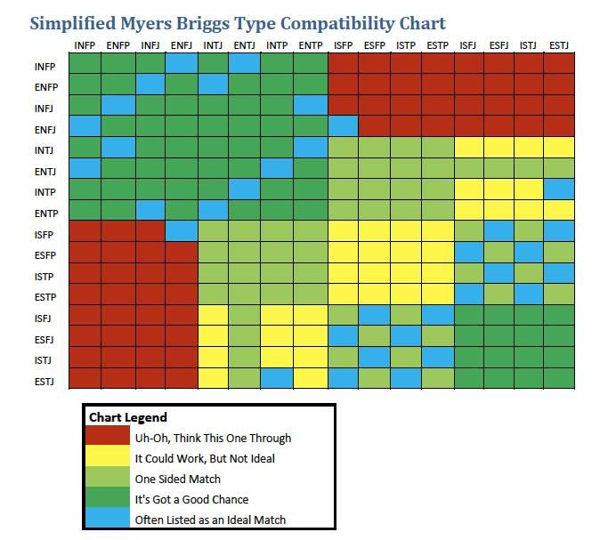
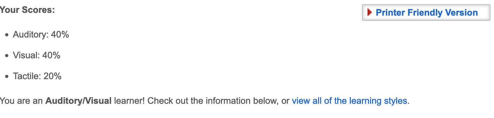
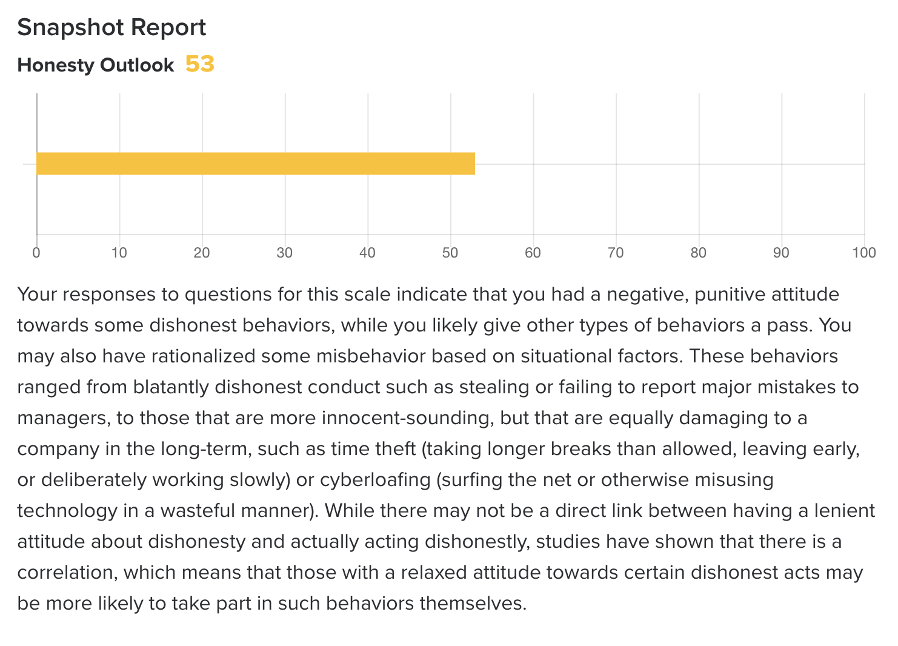

Name: Amelia Bradbury
Student Number: 3930652
Student Email Address: 3930652@student.rmit.edu.au
Nationality: Australian
Education: First Year University
Languages spoken: English & random words in Mandarin (thanks to my boyfriend!)
Pets: One (small black cat called Binx)
Interesting fact about myself: I play League of Legends & earn money from playing/selling accounts :) I used to be addicted to WoW classic, however I am slowly settling in to adulthood & am too tired to play games when I get home from work.

This role at ETORO piques my interest, as I would be responsible for maintaining a cybersecurity strategy, providing guidance on the most efficient cybersecurity practices for different business functions, & lead a team while keeping team members motivated. I am keen to build success by actively participating in the cybersecurity committee with subjects like potential security risks. The stock & crypto space is constantly evolving & I would love to be a part of that. I feel like my MTBI type works well with leading a team in a caring & supportive way, & would set me apart from the typical "financial bro" type :) I currently have no experience in Cyber Security. However, I have Fin-tech expertise working for a BNPL Australian company that is now expanding overseas. I have developed industry knowledge of what customers need & want from financial institutions, as well as practical solutions on how companies can keep their customers from going to other competitors. This role needs 7+ years of experience in a global organisation (publicly traded is an advantage) and a bachelor's degree in IT, so I have a while to go. I will need to have an understanding of current & emerging threats as well as solutions to these threats. I want to grow with the company I am currently with & gain transferrable skills to enter crypto once I finish my degree. I am self-driven & self-directed, as this is crucial for online studies. I am detail orientated - which is sometimes a hindrance as this makes me a perfectionist. I promise to try my best in any way I can to commit to my studies & future career opportunities.
The test results are accurate. I have done the MBTI test many times & I have always gotten the same result. INFP stands for introverted, intuitive, feeling, and perceiving. About 80% of Fortune 100 companies rely on these tests to build stronger, more effective teams and healthier organisations - group assignments could benefit from being structured similarly! When forming a team, taking the personality type compatibility chart into account may be a step in the right direction. Many times, groups are often sick of each other by the time the assignment is supposed to be presented. This solution will save a headache for all parties involved. If we know someone's MBTI type, we can understand how they think without knowing them personally. Less conflict = more productivity! I am equally a visual & auditory learner. I am flexible in the way I learn & conceptualise things; this is useful for group projects as I can adapt to other peoples learning needs. INFP Key strengths include: Creative, Thoughtful, Loyal, Supportive Weaknesses include: Easily stressed, being Overly idealistic, being Slow to open up, having Feelings of inadequacy, and can come off as cold. These strengths & weaknesses can both make or break a group. Creativity & being supportive of group members are super important. However, being easily stressed & slow to open up is detrimental as it's important to bond as a group to ensure an easy flow of group work. I have attached a table to display how different personality types interact. For example, because I am an INFP, I wouldn't want to be paired with a person with ISFP. Similar personality types may have an easier time understanding each other. Still, on the other hand, they have the same weaknesses and blind spots, which could cause a lot of trouble. The last test I included is an integrity test. Most employers do this to see how honest you are. I couldn't find the exact one I did for my current employer; however, this one is interesting as it is basically like a moral compass & determines what you perceive as being untruthful & if it is justifiable or not. I do not think this is important for group work and structuring; it is useful to employers if they value honesty.




My project is to create an app to help children learn to code intuitively rather than being taught in a traditional classroom in their later years if they decide to pursue IT. Coding should be a mandatory class for pre-teens, as it promotes analytical thinking, helps you understand how things work in today's IT-driven world & can even be a lot of fun as well as a creative outlet. The project aim is to create an App targeted towards children (ages 10-16) to learn the basics of coding. They are learning to code and teach children how to think instead of what to think. This App will emphasise how different types of thinking can work to develop something they like, such as their own game. Coders are constantly challenged & asked to use their problem-solving skills. This takes practice & requires breaking the issues into manageable sections and identifying & implementing solutions. Children will start gaining problem-solving skills as soon as they write their first line of code. When children are in a programming environment, children have "opportunities to develop mathematical concepts, problem-solving & social skills". This research suggests that even if your child doesn't want to pursue IT as an adult, establishing a practice of coding early in life will help them build highly-transferable cognitive skills.
The App will allow children to learn on the go, slowly gaining coding skills so they can develop their coding skills into small projects later in their coding journey. The App will teach small challenges daily - these lessons will be brief & be under 30 minutes long, with interactive video, images & sound - with a bright colour palette to engage with children. The App will look similar to "Duolingo"; instead of coding taught in a traditional classroom, this App makes learning to code intuitively. Children can experiment with examples & write & run their code. Parents & children can set a daily goal & maintain a streak to make a habit of coding and see how they perform with the course work. At the end of each coding course, there is a certificate you can receive to move on to the next level.
Developing a smartphone app will be critical for this project as children typically have access to tablets & phones rather than a personal computer. To achieve a cross-platform app to both be available on the App store & Google Play, the language it might be written in would be JavaScript or C. An example of what the App will look like is similar to Duolingo. The App will be optimised for primary tablet use, so multiple tablets running on the different OS will be needed for testing. GitHub will be utilised to manage codes between team members, & discord will be used for communication (as you can both message, screen share & video call!).
If the App is successful, children can learn to program anywhere, anytime, starting from the basics on their device (like an iPad). It will use interactive exercises to get them to write & understanding code right from the start. A child who learns to code will have a significant advantage in life, as computer programming is the future. No matter what industry the child eventually decides when they are grown, whether healthcare, teaching or other - coding promotes both creative & logical thinking. This is why coding should be taught in schools while they are still young.
⭐⭐
Ahmadov, O. (2022) Why coding is important for kids, eLearning Industry. Available at: https://elearningindustry.com/why-coding-is-important-for-kids (Accessed: December 18, 2022).
Why coding is important for kids: 7 reasons all parents should know (2019) FunTech Blog. Available at: https://funtech.co.uk/latest/why-coding-is-important-for-kids-7-reasons-all-parents-should-know (Accessed: December 18, 2022).